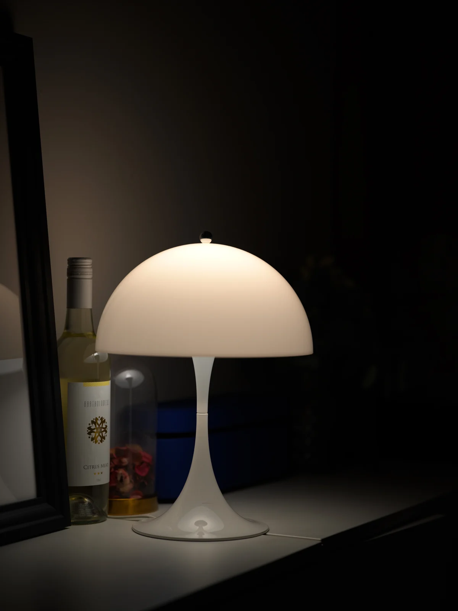

Lamp
灯

中文
大多数时候，我都在花钱买各种玩具：数码玩具、工具，或者一些新奇的东西。
但回头看看家里摆在外面的那些东西，我才发现，我居然买了那么多灯。连我自己都没想到，我会这么喜欢买灯。当然，这些灯都是比较特别的、不一样的。
灯是一种非常基本的电器。在现代社会里，灯可能是最早出现的东西之一，是家里第一件真正把电派上用场、有价值的东西。
灯能让人感觉温暖，让人在黑暗里不再害怕。它的用处实在太多了。所以即使不需要光亮的时候，你也不会为了省那么一点点电费就把它关掉。灯在那里，就是天经地义的，它就应该存在。
所以，不需要为在灯上多花一点钱去找什么理由。仅仅因为喜欢，就可以多买几盏灯。
这盏台灯，是有一年我太太生日的时候买的。礼物其实很难买，日常什么都不缺，真正奢侈的名牌又好像没什么实际的用处和必要。但在床头多摆一盏灯，一盏温暖的灯，整个生活的氛围会变得完全不一样。这是一种生活方式上的调节。当然，网上很容易找到这盏灯非常便宜的仿品。但为了那种材质，为了那种均匀泛出的白色，为了摆在床头的品质感，我愿意花十倍的价格，去买一个只会发光的、这么简单的电器。
我们一天当中，从早到晚都需要很多能量。出门晒个太阳，早上做个运动，洗个热水澡，和喜欢的人多说几句话，都是能量。到了晚上，天黑之后，关掉大灯，房里只留这么一盏昏暗、但足够温暖的小光线，也是能量。
有时候看着它，我会想到人走到一生尽头、最后那一瞬间的感觉。昏黄的灯光，其实就是一天的结束，而这样的场景，很容易让人想到一辈子的结束。到了那个时候，你希望身边留下来的是什么？
不管你在外面有多大的影响力，有多少财产，能撬动多大的杠杆，在最后这昏黄、昏暗的光线之下，你能看清楚的，也只是自己周围一两米之内的东西。而这些，可能就是你最终仅有的一切，是能陪你走到最后一瞬间的一切。
除此之外，就是能舒服地躺下来，放松自己，享受一个小房间里的安静氛围，旁边坐着或躺着最亲密的人。到了最后，光线消失殆尽，能量用完，最后一瞬间之前，这可能就是你唯一剩下的、唯一还惦记着的东西了。这么说来，我并不是一个喜欢挥霍金钱、去满足新鲜感和好奇心的人。我在乎的是什么？我在乎的是，在这些可大可小、能让人兴奋、也能让人平静的不同物件之间，找到自己在这个世界上的位置。
English
Most of the time, I spend my money on toys of one kind or another: digital gadgets, tools, or something novel.
But looking back at the things sitting out in our home, I realised I have bought so many lamps. I never knew I liked buying lamps this much. Of course, they are all rather special, each one different.
A lamp is a very basic appliance. In the modern home, it may have been one of the first things to make electricity genuinely useful, genuinely worthwhile.
A lamp makes you feel warm. It keeps you from being afraid in the dark. It is useful in so many ways. Even when you don't need the light, you wouldn't switch it off just to save a little electricity. A lamp being there is simply the way things should be. It belongs.
So there is no need to justify spending a little more on lamps. Liking them is reason enough to buy a few more.
This table lamp was a birthday present for my wife, one year. Gifts are hard to buy, really. We have everything we need in daily life, and the truly luxurious brands don't seem to have any real use or necessity. But one more lamp on the bedside table, one warm lamp, changes the whole atmosphere of life. It is a way of adjusting how you live. Of course, you can easily find very cheap copies of this lamp online. But for the material, for that even white glow, for the sense of quality it brings to the bedside, I would happily pay ten times the price for such a simple appliance that does nothing but give light.
From morning to night, we need a lot of energy. It comes from many places: the sun on your face when you step outside, a morning workout, a hot shower, a few more words with someone you love. And after dark, when you switch off the big lights and leave only this one dim but warm little light in the room, that is energy too.
Sometimes, looking at it, I think about the last moment of a person's life. This yellowish light is the end of a day, and a scene like this easily brings to mind the end of a lifetime. When that time comes, what would you want to have left beside you?
No matter how much influence you have out there, how much wealth, how much leverage you can pull, under this dim yellow light, all you can really see is what lies within a metre or two around you. And that may be all you have left in the end, everything that can stay with you until the final moment.
Beyond that, there is only lying down comfortably, relaxing, enjoying the quiet of a small room, with the person closest to you sitting or lying beside you. When the light finally fades and your energy runs out, that may be the only thing left, the only thing you still care about, in the moment before the last one. Put that way, I don't think I am someone who likes to squander money on novelty and curiosity. What do I care about? What I care about is finding my place in this world among these objects, large and small, that can excite you and can also calm you down.